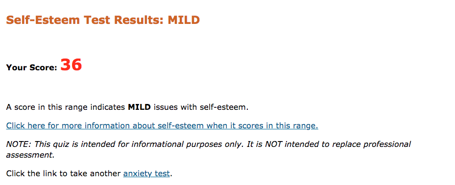
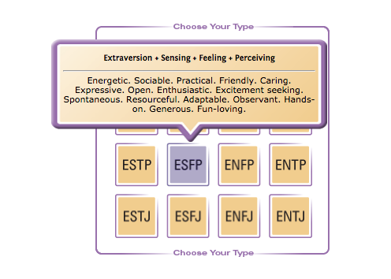

Peter John Goodwin
Student Id: s3793762
Email: s3793762@student.rmit.edu.au
p goodwin
Background
I was born in Brisbane, Queensland in 1990. I lived with my mother and sister, Our background is very mixed, I have a range of different nationalities, from eastern european to early Virginia African Americans. After graduating year 12 in 2008 I studied two diplomas, A diploma in web development and another in graphic design. I moved to melbourne in 2016 to start my career as a web developer. Now in 2019 Im studying my degree in Information Technology and work full time as a junior web developer.
Interest
In high school I had completed a certificate 3 in multimedia, This was a school program helping students find their career path. I enjoy the creative side of IT, Such as programming, software applications, web design and web development. I ended up moved from Queensland to Victoria for better job opportunities. Now I work full time as a junior web developer at a local furniture company.
Why study at RMIT?
I love cinemas, And I know one of my favourite Australian directors is James Wan, Who studied at RMIT in Melbourne, And became a highly successful international director.RMIT is a global university of technology, design and enterprise in which teaching, research and engagement are central to making an impact and creating life-changing experiences for our students.
I feel that at RMIT I am able to develop my skills and make a real impact on my career. In the industry of Information Technology there are a number of areas to work in. I have experience in web programming, however I would like to learn how to programming software. My expectation from this degree is to develop a IT mind set, To understand not only how programming works but the logical mindset of a programmer.
Ideal Job
Gaming Entertainment Systems Link HereGaming entertainment systems (GES) is a small company which develop software products for gaming entertainment industries. The position initials helping the complete the development of prototype gaming system due for launch. Perks are:
- Flexible working hours
- Work from home
- Opportunities for fulltime work
The position requires experience in with Javascript/Es6 and HTML/CSS skills such as NodeJS, SQL, GIT/Github and some must haves are C# and Arduino C.
The skills and experience required in this position have some similarities to my own skill set such as Javascript, HTML and CSS. I have been working in the industry for 1 and a half years as a junior web developer. There are some areas that I am not experienced in such as C#, nodeJS, SQL and GIT.
I would like to have this dream job, However there are some skills and qualifications that i would need to achieve before applying. I have researched a four step plan to get my dream job:
- Step 1 - Understanding my qualification, experience, and skills.
- Step 2 - Understanding the position (what their expectations are).
- Step 3 - What areas I need to improve, gain experience, and work hard at.
- Step 4 - Write a plan to study, or gain experience in the technology required to get my dream job.
Online Test
The following are three online profile test, To understand my personal learning style, Self Esstem, and the Myers-Brigg test.
- Learning style test
- Personal test 
- Myers-brigg test ESFP 
The results of this test help me better understand my personality and a clear understanding of my learning style and self-esteem. I feel that after doing the Myers-Brigg test It has helped me to better understand my strengths and weakness. I am a genuinely social person, who doesn't have a problem meeting new people and socializing. Although I am a social person I can be shy at times so introducing myself first, would be a great way to breaking down any boundaries I have.
Mind Games
Mind-Games is an interactive gaming website and application. It is targeted at primary school students. Students have the ability to play a number of interactive games via our website and iPhone app. Our goal is to help improve young student with their learning skills. Other than having entertainment value, Problem-solving games have the ability to improve users cognitive, social, mathematical and problem-solving skills, Students can access Mind-Game either via a web browser, or a iPhone mobile app.
Throughout this report I will outline the benefits of educational gaming for students in early education, the primary goal of Mind-Games, our marketing plan, target audience, and tools and skill needed to develop these games. In my conclusion, I will state how Mind-Game will help develop young minds and prepare them for their future.
Lumosity is a highly popular gaming application with over 75 million users, It claims to improve memory attention, flexibility, and problem solving. Similar to Mind-Games, Lumosity is a powerful tool for people of all ages, However this tool can be of great value, for young students starting school for the first time. The mobile gaming industry intakes 70 billion dollars annually, with app like lumosity making 23.6 million annually. The mobile industry is huge, some of the top online gaming apps have a annual income of millions, The following are the top three gaming app today:
-
Pokemon Go $536 million
-
Fortnite $510 million
-
Candy crush $236 million.
Gaming is beneficial in a number of ways, especially for children learning. Incorporating video games as a teaching tool is a great way to help children improve their academic skills. Using Mind-Games as an educational tool to prepare children for their first years of primary school is a great idea.
Research from Vanderbilt University should a significant increase in learning, using educational video games. The study involved over 1,000 students and 13 teachers, All located in urban, suburban and rural areas over different states. Teachers taught two separate classes, one with educational games and one without. This shows students using education game-based learning, outperformed other students on essays and multiple choice questions
The benefits of online gaming is overwhelming, this is the reason behind the developing Mind-Games, As a tool to help younger students develop crucial learning skills, Preparing them for there future education by developing problem solving skills, improving critical thinking, and enjoying learning.Mind-Games will be designed and marketed as a enjoyable online game that has education benefits. We are targeting is students beginning primary school, With basic math games(addition and subtraction), matching card pairs, and basic computer skills.
In a online article titled What's the right age to introduce your kids to computer? Written by Christ Matte. Dawn Cunninghams a licensed preschool educator in somerville, MA, States that by the age of 4 to 5 most children have developed basic computer skills, The article follows on by stating Children ages 5 to 7 have basic computer skills and can enjoy time-based games and activities, they are even able to start coding.
Our target audience is children from ages 5 to 7. The design of our website is important too, Children at that ages have short attention spans, So our site must have bold font, bright colours, engaging and interactive. Character Illustrations to help guide student throughout the site, It's important to keep student excited and continually hold their attention.
I have developed a prototype of one of the games. It's a flip card memory game, Flash cards will appear with identical designs, It is then up to the student to click on two different cards, each game will a random order for the cards. Once the user has click on two Identical icon cards, The cards will match and stay visible until user have matched all cards. Click here to see game prototype
There are a number of tools and Technologies in order to develop any mobile applications, Java can be used with eclipse software, Python and Javascript can be used on Sublime Text, and for IOS systems a programming language called Swift. Just as Java code is uses with Eclipse software, Swift is used with Xcode. Xcode is a IDE ( integrated development environment) for macOS. It is free software to help build app user interface, Xcode also supports programming languages such as Objective C.
When It comes to web development, one of the most powerful languages today that has stood the test of time is Javascript. Javascript is incredibly versatile, with the ability to create interactive games, 3D animation. Javascript is very flexible easy to learn and has a huge amount of libraries, and technical support. There are many resources available for web and mobile programming.
Basic web programming languages in such as HTML, CSS, and Javascript are required for developing the website. There is a difference between web and app programming. For example flash game use programming languages such as Python or Javascript. Javascript has the ability to create interactive games, and 3D animation. Where mobile app development used Java, C++, C#, and swift.
In conclusion, when developing Mind-Games online application Javascript HTML and CSS are the idea methods of creating the website and flash games, however when it come to the Iphone app, Xcode and Swift will be the best programming language for developing Mind-Games app.
The potential of helping young student prepare their educational future, learning skills such as, problem solving, creative thinking, and individual students learning styles, can present significant value. The importance of Mind-Games and other learning games can have great impact on the educational system, Australia is ranked 15 in top educational system in the world, With research shown by Mitchell Institute of melbourne, That one in four students dropped out of high school. With Mind-Games young students can be prepared for a bright future.